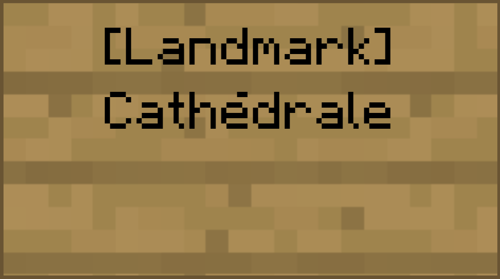

Welcome to the Minecraft Family Server
Points techniques
Tout ce dont vous avez besoin pour vous connecter au serveur et comprendre quels sont les outils additionnels à votre disposition
Statut du serveur
Prérequis pour se connecter au serveur Minecraft
Client Minecraft - Seule la version Java est supportée. Pensez à toujours bien aligner la version de votre client avec celle du serveur.
La version exacte du client est inscrite dans la description du serveur :
== To have a lot of FUN !! ==
Serveur Minecraft - Seuls les joueurs membres de la Whitelist du serveur Minecraft peuvent se connecter.
Discord - Seuls les joueurs autorisés peuvent intéragir avec la communauté de joueurs.
Adresse du serveur Minecraft
Carte dynamique du monde
Pour ajouter un marqueur sur la carte (base, ferme, point d'intérêt à visiter...)
rendez-vous directement dans le jeu, placez un panneau de n'importe quel bois,
mettez le type de tag entre crochets sur la première ligne (par exemple [Base])
et le texte que vous voulez dans les lignes suivantes.
Les tags suivants sont supportés pour le moment :
- Base
- Farm
- Landmark

Pour supprimer un marqueur de la carte, supprimez le panneau.
La mise à jour de la carte est faite une fois par jour pendant la nuit.
World seed
Mods installés sur le serveur
Lorsqu'un mob ou un joueur est tué, sa tête va parfois tomber sur le sol (collectionnez les ou utilisez les pour décorer vos constructions!)
50% des joueurs doivent dormir pour que la nuit passe
Un plugin de monnaie est installé sur le jeu. Très utile lorsque vous avez des ressource en trop que vous voulez vendre. Achetez ensuite des objets rares au marketplace ou utilisez des commandes spéciales qui coûtent de l'argent
Il est possible de se téléporter directement à sa maison depuis n'importe où sur le serveur. Utilisez la commande /sethome pour définir les coordonnées de votre maison. Utilisez la commande /home pour vous téléporter vers votre maison. Attention, cette commande coûte 50$
Si vous voulez rejoindre un ami rapidement sur le serveur les commandes /tpa, /tpaccept et /tpdeny sont disponibles. Ces commandes sont gratuites.
Règles
Pour un maximum de plaisir, voici quelques règles très simples que nous devons tous respecter
Créez votre base à une distance raisonnable de celle des autres joueurs ( disons 500+ blocks).
Et oui ! Certains de vos voisins pourraient avoir de grandes envies d'expansion !
Et puis le Nether est là pour voyager rapidement de base en base.
Visitez le monde, émerveillez vous devant les créations des autres !!
Par contre, un creeper vient de vous exploser à la face et cela a endommagé quelque chose ?
Rebouchez, le trou, réparez les dégâts. Ce n'est vraiment pas possible ? Laissez un mot d'excuse, les erreurs ça arrive.
Utilisez les mods client que vous voulez, mais sans nuire à l'expérience des autres joueurs ni à la vôtre.
Seuls les noobs utilisent des mods comme X-RAY !
Utilisateurs de MultiMC, vous pouvez importer un profil aligné sur la version du serveur et déjà moddé avec Voxelmap et Mouse Wheelie ici
Le PVP est activé sur le serveur, mais ne tuez pas les autres joueurs sans leur consentement.
Vous avez envie d'une bonne bataille ?
Rendez-vous sur l'arène de PVP et amusez-vous !
Ne pillez pas les fermes communautaires (par exemple la ferme de fer).
Prenez ce dont vous avez besoin, laissez-en pour les autres.
Il est possible d'acheter et de vendre des items dans le jeu. Le plus simple est d'aller au Marketplace.
Pour savoir combien vous avez d'argent en banque, entrez la commande /bal dans le chat
Vous voulez soumettre une idée, avez besoin d'une amélioration, voulez organiser un évènement comme un combat PVP, postez dans le Channel Discord #suggestions
Une question, besoin d'aide avec le serveur, un ami de confiance veut se joindre ?
Demandez à Freetonio
Respectez la "bulle" des joueurs lorsqu'ils ne veulent pas être importunés chez eux.
Soyez polis et respectueux les uns envers les autres.
Tout écart de langage, ou attitude néfaste sera sanctionnée, premièrement par un avertissement au joueur fautif, ensuite par un bannissement plus ou moins long en fonction de l'importance de la faute.